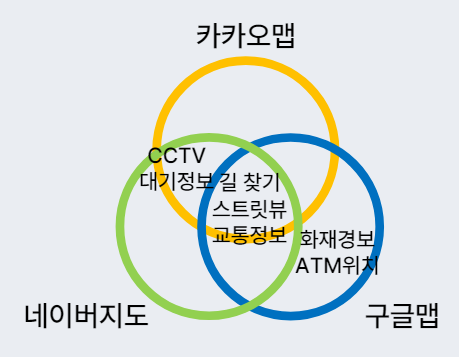
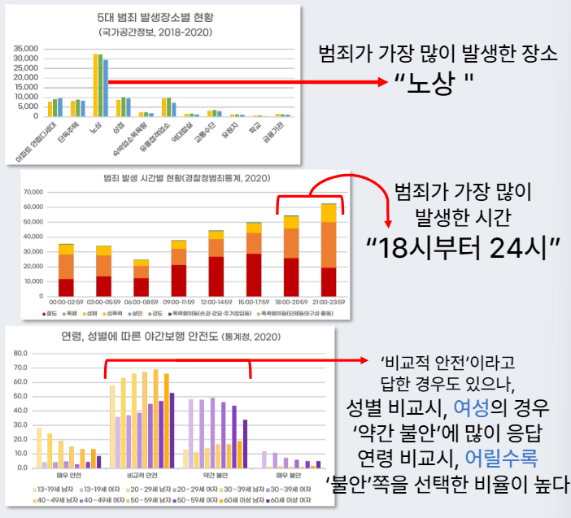
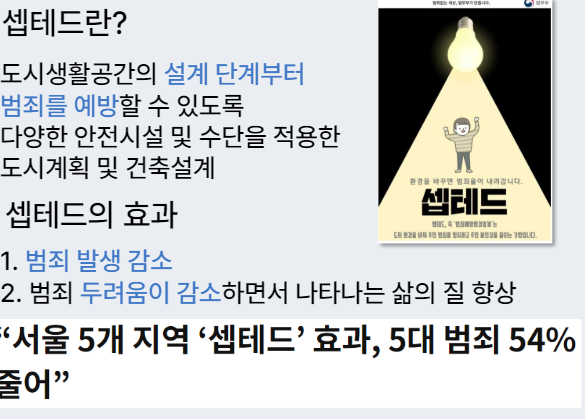
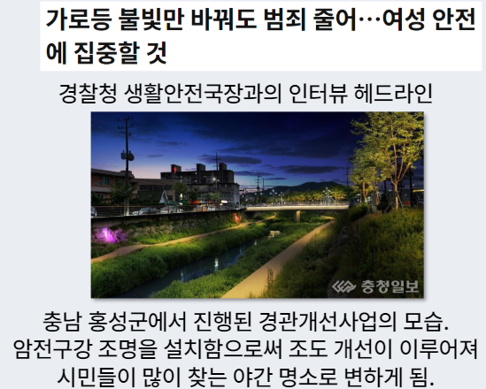
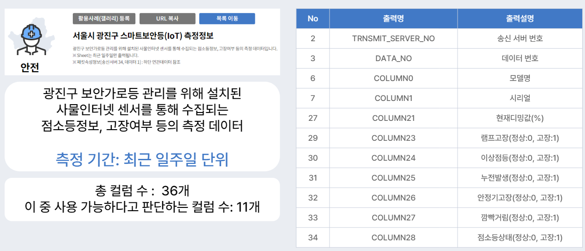
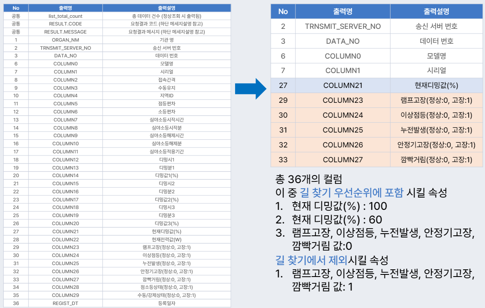
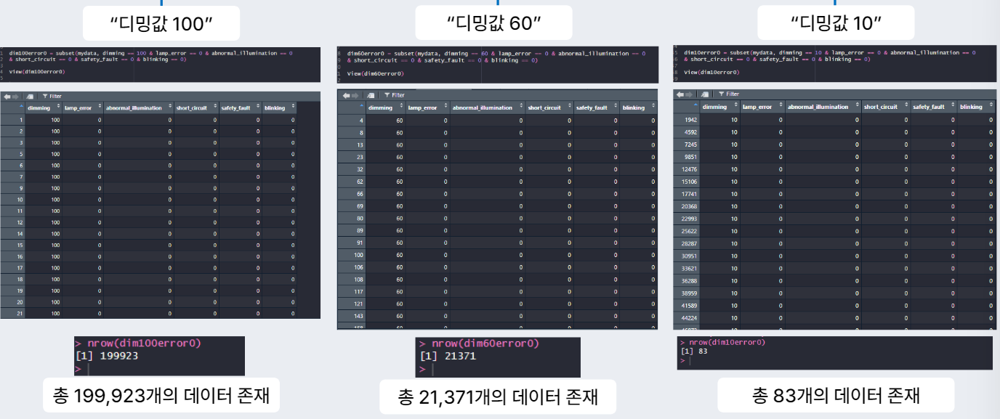
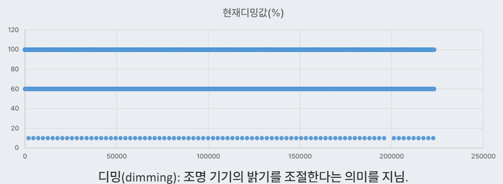
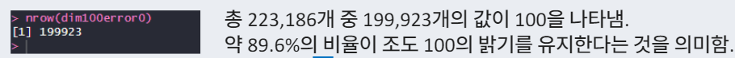
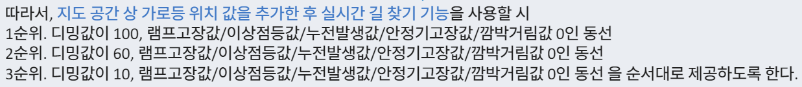

진행 기간: 2022년 9월 10일 → 2022년 9월 30일
🔦 라이트 나이트: 모두에게 안전한 야간 귀가길을 위한 고조도 길 찾기

문제 배경
1. 모바일 지도 어플리케이션 ‘길찾기’ 기능에서 고려되지 않는 범죄로부터의 안정성

→ 이용자에게 편리성을 제공해주지만, 범죄로부터의 안정성을 고려할 수 있는 기능은 아님. 위성지도, 교통 상황 등 다양한 디지털 정보에 기반한 빠른 길 안내가 목적인 기능들임.
2. 성별 및 연령별 상이한 야간 보행시 체감 안전도

필요성
가로등과 범죄율의 유의미한 상관관계
- 셉테드(CPTED, Crime Prevention Throught Environmental Design)
도시생활공간의 설계 단계부터 범죄를 예방할 수 있도록 다양한 안전시설 및 수단을 적용한 도시계획 및 건축 설계
효과: 범죄 발생 감소, 범죄 두려움이 감소하면서 나타나는 삶의 질 향상

- 경관개선사업을 통한 암전구간조명 설치

🔥 더 밝을수록 치안이 좋아져서, 가로등과 범죄율은 음의 상관관계를 가진다고 볼 수 있음.
활용 데이터
🔦 “가로등 데이터”
광진구 스마트보안등(IoT) 측정 정보
(출처: 서울시 열린데이터 광장)

데이터 전처리: R

데이터 분석
검색 조건: “램프고장값 0, 이상점등값 0, 누전발생값 0, 안정기고장값 0, 깜빡거림값 0”


→ 디밍값이 크다 = 더 밝은 길이다.

🔦 따라서, 지도 공간 상에서 가로등 위치 값을 추가한 후, 실시간 길 찾기 기능을 사용할 시 디밍값이 높은 순서대로 동선을 제공하는 것.

기대효과
- 개인적 측면
1. 국민의 체감 안전도 향상: 야간 보행시 여성, 낮은 연령대의 시민들에게 불안감을 일부 해소가능한 대안을 마련 가능함. 체감 안전도를 향상시킬 수 있음.
2. 국민의 알 권리 확장: 라이트 나이트를 이용함으로써 공간 정보에 대한 접근성이 증가해, 일상생활에서의 의사결정에 중요한 기초정보와 기준으로 활용을 기대할 수 있음. -
행정적 측면
1. 구역별 범죄 발생 감소:시민들의 밝은 길로의 보행률 증가 → 범죄 발생에 대한 방어적인 분위기가 형성 → 시야 확보가 충분히 이루어져 CCTV를 이용한 범죄자 검거에 빠른 도움
-
야간 조도 개선 사업 발전 및 3세대 셉테드 사업 발전에 기여
시민들의 밝은 길로의 보행률 증가→ 인적이 드문 곳이 명확해짐 → 암전 구간에 조명을 추가 설치 및 조명의 색 개선
-
기술적 측면
1. 공간 정보 산업 발전에 기여공간 정보 산업은 국가에서 주목하는 산업전망이 높은 분야 중 하나.
→ 공간정보 서비스인 ‘라이트 나이트’ 는 도시계획 시 범죄예방 디자인 구축에 도움이 될 수 있을 것이라 기대
- 융복합 기술로의 발전 가능성
💡 깨달은 점
- 프로그래밍을 배우기 시작하던 때 간단하게 실행한 아이디어. 프로그래밍 역량을 좀 더 쌓은 후 데이터 분석 및 길 찾기 안내까지 실행해본다면 좋았을 것 같음.
- 교내 데사데이 아이디어 공모전, 광진구 빅데이터 공모전에 참여하여 PPT로 만드는 과정이 결과물을 한 번에 볼 수 있게 스스로 정리하는 시간이었음.
- 단순한 아이디어임에도 불구하고 정리하는 것은 꽤나 시간이 많이 걸리니, 나중에 진행한다면 미리미리 작성을 해둬야 겠음.
- 꼭 스마트 보안등 데이터로 진행할 필요는 없을 것 같음. 불이 달려있는 CCTV가 있을 수도 있고, 설치된 가로등에 대한 데이터가 있다면 그걸 함께 사용해서 분석을 진행한다면 더 좋을 것 같음.